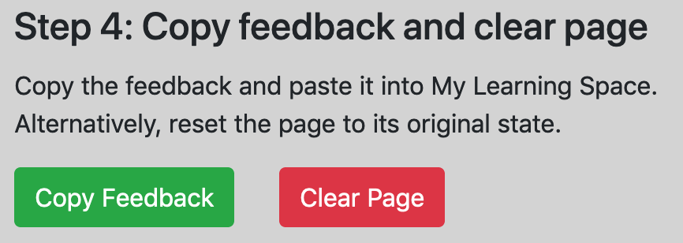

Jotter Notarum: Feedback Generator - Instructions
Using the system (basic version)
Below are the instructions for using Jotter Notarum, the student feedback generator.
Step 1: Select your feedback comments file
You need to select a .txt file to load into Jotter Notarum. This file should contain your commonly used comments. Hit "Browse" to select a file.

Your feedback .txt file must be formatted in a specific way. Section headings must start with a #. The end of a section is denoted by a new line containing a *. Blank lines will be ignored. Ensure each line of feedback ends with a fullstop. To help you, a sample feedback file has been provided.

Step 2: Select your feedback phrases
Select all the required pieces of feedback you wish to use for a particular student. You also have the option to split the feedback into paragraphs by checking the relevant "Insert line break in feedback text" checkboxes.
To add a new comment to a section, choose "+ Add a comment to this section", type the comment and press "Add". The comment is added to the end of that section and saved to your feedback file. To start a new section, choose "+ Add a new section" at the bottom of the list, type a heading and press "Add section". The new section is added to the end of your file, ready for you to add comments to. In Chrome and Edge your browser will ask permission to edit the file the first time, and the file is updated automatically. In other browsers, press the "Save updated file" button that appears and replace your old feedback file with the downloaded one.
Choices inside a comment. Put the options in square brackets, separated by commas, and the comment will show a drop-down menu in that spot: This is [an excellent, a very good, a good] report. Pick an option and the comment is ticked for you; only the option you chose ends up in the feedback. Include the small word before it in each option ("an excellent", "a good") so the grammar always works. If an option needs a comma, separate the options with | instead. You can use more than one set of brackets in a comment. If you tick a comment and forget to choose, Generate Feedback will stop and highlight it. A single item in brackets, such as a reference like [1], is treated as ordinary text.
Editing and deleting comments. Press "Edit comments" above the list to show an Edit and a Delete button beside every comment. Edit changes the wording; Delete asks you to confirm. Changes are saved to your feedback file in the same way as added comments (see above).

Step 3: Generate feedback text
To generate the paragraph(s) of selected feedback, press the "Generate Feedback" button. The text content of the selected checkboxes will appear in the text area below the button.
A word count appears under the text area. You can type in the text area to adjust the feedback, and your browser's spellcheck (set to British English where your browser allows) will underline words it does not recognise. The spellcheck is your browser's own and runs on your computer.

Step 4: Copy feedback and clear page
Click the "Copy Feedback" button to copy the contents of the text area to your clipboard. You will now be able to paste the feedback into My Learning Space.
Once you have copied the feedback for a student, click "Clear Page" to reset the checkboxes and text area. You can now move on to selecting feedback for a different student.

Using the advanced version
Features
The Advanced page has the same steps as the main page, with a student list added at the start.
In Step 1, load a .txt file with one student name per line (here is a sample class list). The names appear in a small scrollable box, and the student you pick is highlighted. Then load your comments file, select phrases and generate the feedback as usual. The steps open in order: each step stays locked, with a note saying why, until the one before it is done. If a file can't be used (for example, it isn't a .txt file, it is empty, or a comments file was chosen where a class list was expected), a message appears beside the Browse button and nothing on the page is changed.
In Step 5 you can copy the feedback, save it as a Word file for the selected student, or add it to one combined Word file, with each student starting on a new page. "Clear feedback" empties the page and, if you leave the box ticked, selects the next student in your list. In Chrome and Edge the combined file is updated in place. In other browsers it is downloaded again each time you add a student.
Unfinished feedback is kept for each student while the page stays open: switch to another student and come back, and your ticks and text are still there. Students with unfinished feedback are marked "draft" in the list. Drafts are held in memory only, so they are lost if you close or reload the page (you will be warned first); export or copy feedback you want to keep. Nothing is uploaded; see Privacy.